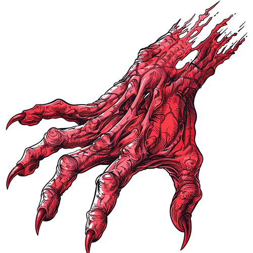
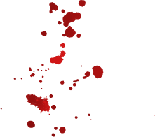
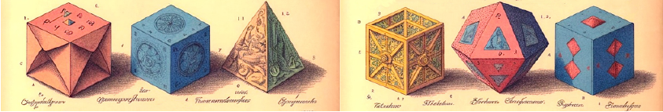
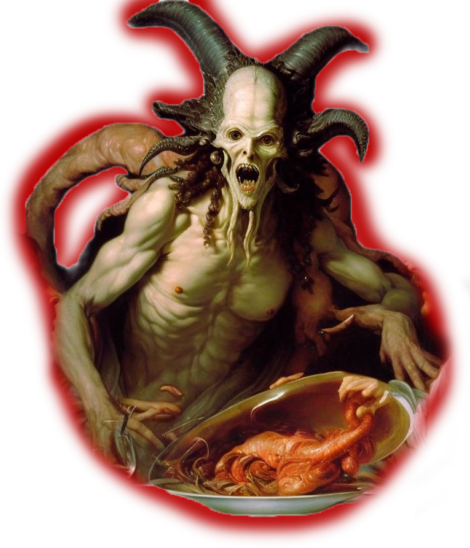
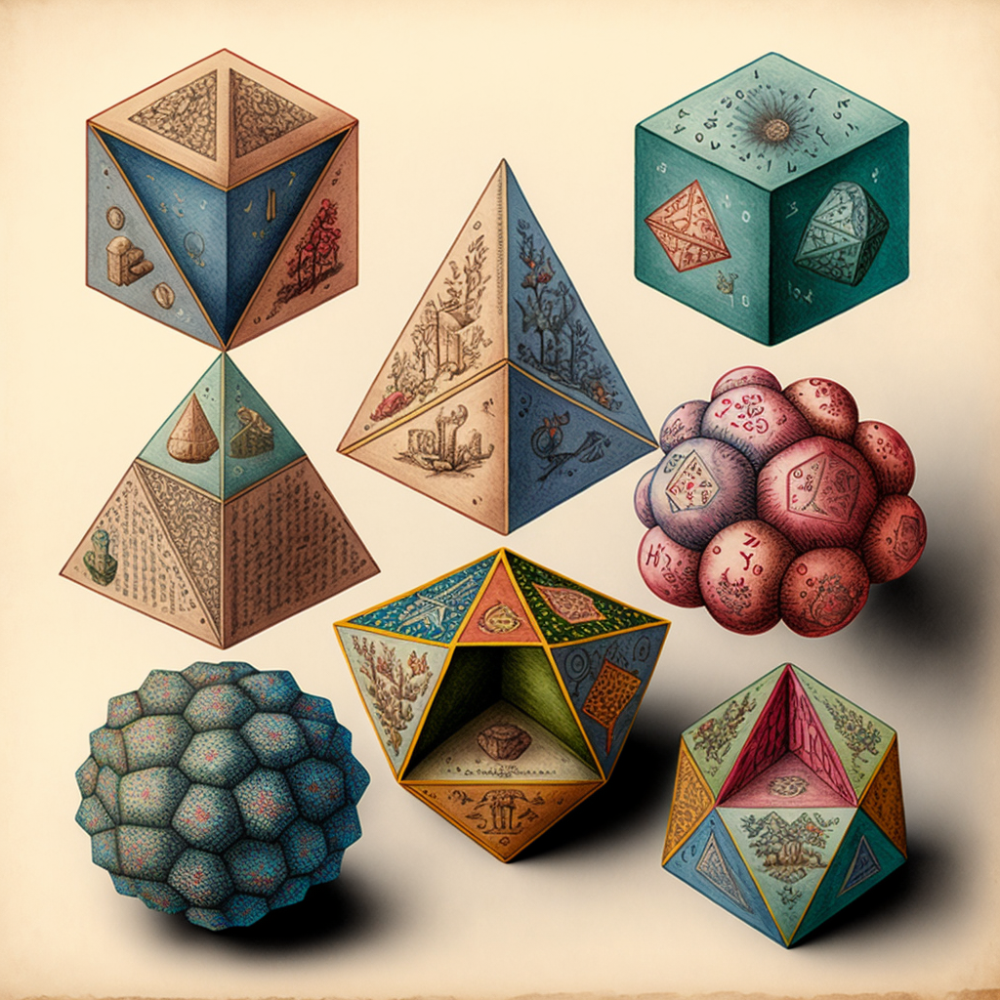
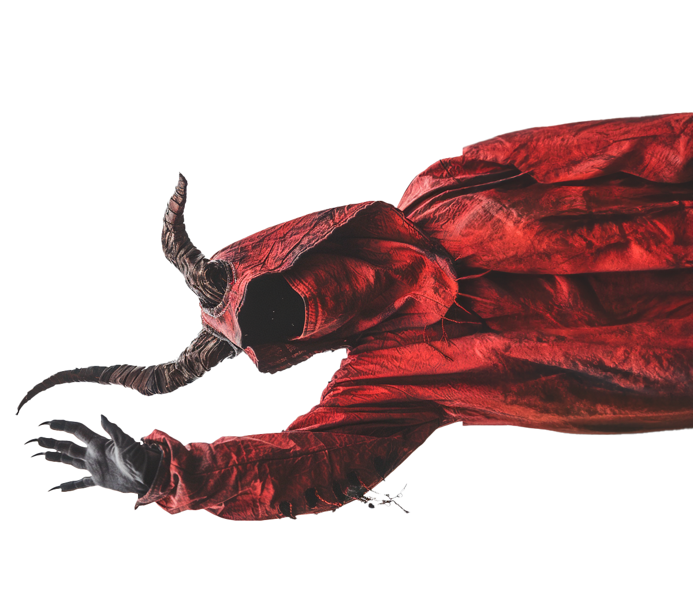
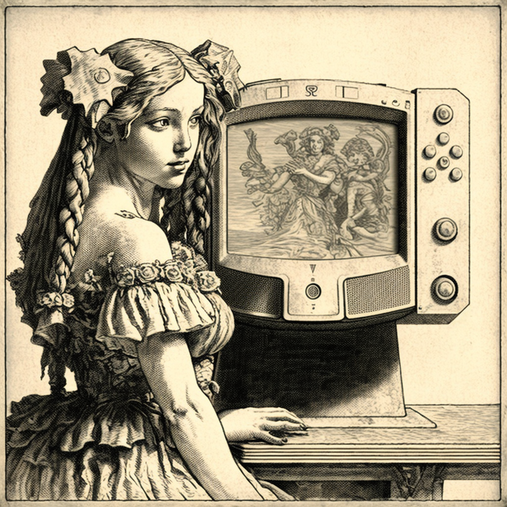
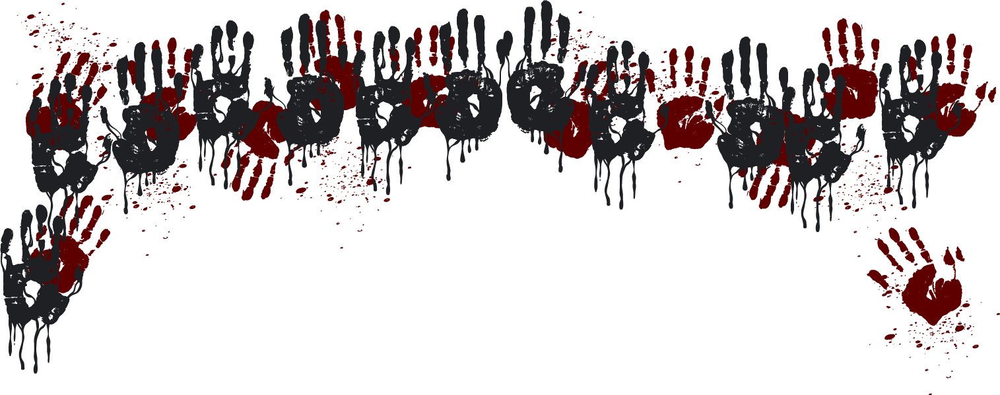
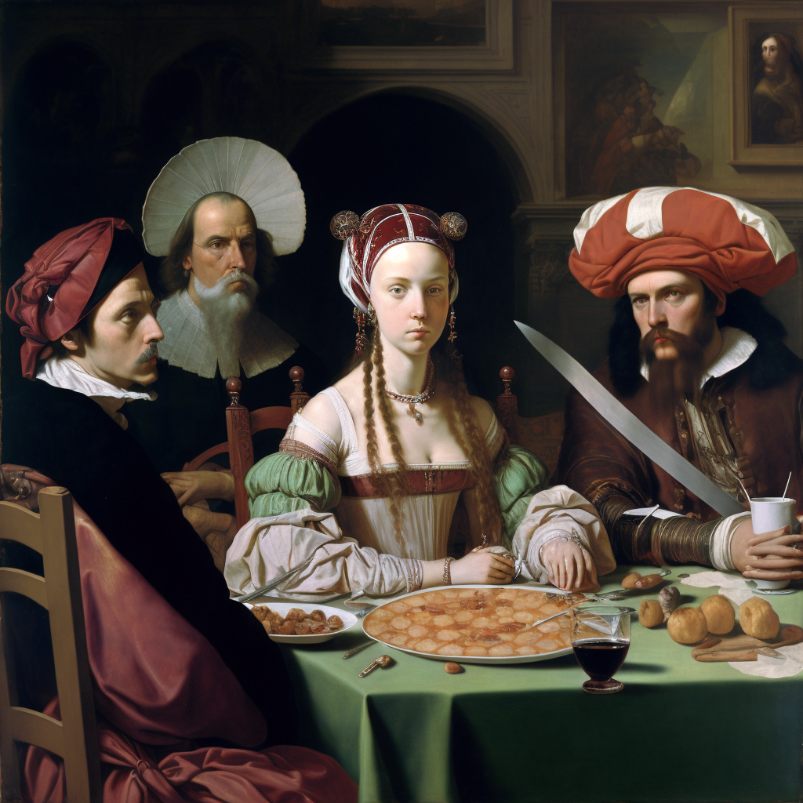
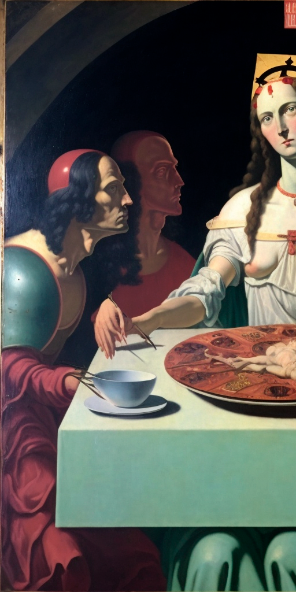

(cit.); di certo devo parlarne con Luigi Serafini ^_^. Doveva essere questo il testo a commento della pubblicazione su Instagram di alcune immagini realizzate con la versione 4 di Midjourney, una A.I. “Text to image”, con la cui prima versione avevo già realizzato alcuni fumetti usciti sulla “Lettura”, su “Linus” e qua su “L’Indiscreto”, e che, se già aveva mostrato capacità impressionanti prima, che adesso si son fatte non men che sbalorditive, come dimostrato da un precedente post Instagram, in cui avevo satireggiato sul problema (reale) delle A.I. come Midjourney (da qui MJ), che rischiano di rubare il lavoro agli illustratori; un post che ha scatenato reazioni entusiastiche e anche diverse stupefatte domande di chiarimento – “CHI HA FATTO ‘STA ROBA?”: in effetti, se non si era al corrente dell’esistenza di MJ, l’unica spiegazione plausibile era che fossi diventato un abile pittore a olio nel giro di una notte.



Midjourney viene a mangiare nel piatto degli illustratori
Così, per quanto si fosse già discusso abbondantemente della cosa di là su Facebook con vari illustratori e scrittori, a tutti quei “come/cosa/perché” ricevuti su Instagram, ho deciso di rispondere con un post fattosi via via più lungo, che poi è diventato così lungo da farmi pensare che sarebbe stato un peccato lasciarlo solo come post Instagram, ed eccoci dunque qua a fare il punto della situazione con un articolo. Quei “dipinti” tra Giger e Caravaggio, come queste “incisioni” qua (tra Serafini e Carroll), li ho fatti, appunto con la v.4 di Midjourney, una A.I. “text to image”, ovvero un programma, disponibile a tutti attraverso l’app di messaggistica “Discord”, a cui si dice cosa disegnare, e lui… disegna. E lo fa a colpo sicuro: i due post Instagram di cui sopra, e le diciotto immagini complesse che li compongo, sono costati pochi minuti di lavoro: il tempo di trovare le parole giuste, far fare a Midjourney un centinaio di prove (cosa che è in grado di fare, lavorando più immagini e comandi in parallelo, in meno di 10’), scegliere e affinare (sempre in automatico, tramite lo stesso Midjourney) le migliori, ed ecco fatto.

...ed è molto vorace
Ora, la questione non è solo perturbante per il livello raggiunto in breve tempo da MJ e per il modo in cui pare raschiare dal subconscio collettivo (anzi, guardando a questa nuova serie, chi ha confidenza con la psichedelia non può non aver riconosciuto forme e pattern già viste in sede visionaria, e quindi appartenenti a livelli ancora più profondi della coscienza, che la si voglia pensare umana o universale), ma è anche allarmante per questioni prettamente pratiche, anzi legali/autoriali: MJ è così potente non perché abbia “capito” come si disegna, ma perché è stato nutrito con milioni di immagini create da umani – artisti reali che hanno sviluppato non solo il suo repertorio iconografico, ma anche i suoi “sistemi” di accostamenti cromatici, composizione, coreografia, eccetera.
A chi vuole aggiornarsi in un colpo solo sullo stato del dibattito, consiglio tre articoli, su posizioni diverse, scritti rispettivamente da Lorenzo Ceccotti (aka LRNZ, artista e fumettista), Francesco D’Isa (artista e scrittore), Gregorio Magini (scrittore e programmatore), frutto di dibattiti svoltisi per lo più fuori da qua, su FB, in radio, in panel live, a cui in varie occasioni pure io ho dato qualche piccolo contributo, eccoli qua: LRNZ; D’Isa; Magini.
Indistinguibilità
Molto presto (diciamo il tempo di imparare a fare le mani, che gli vengono difficili perché nelle “fonti” da cui pesca sono spesso intrecciate, parziali, piegate, tenenti oggetti o altre mani, ecc.) un’immagine di MJ sarà indistinguibile da quella fatta da un umano, e in molti casi già lo è. Va da sé che se un “prompter” spaccia l’immagine generata dall’A.I. per un proprio disegno o dipinto si sta comportando da bandito, ed è già considerata buona e doverosa pratica indicare sempre l’origine di un’immagine, laddove sia generata per intero o in parte con una A.I. “text to image”. Ma non possiamo affidarci solo all’onestà dei singoli: già adesso, così come con ogni probabilità stiamo leggendo – ahi! – libri in realtà tradotti interamente o in parte da A.I. (provare DeepL Translate con un brano di testo per credere), e solo revisionati da un umano, circolano ovunque illustrazioni realizzate interamente o parzialmente da MJ (o dalle sue meno efficaci concorrenti Dall-E e Stable Diffusion) e spacciate per umane. Il livello di educazione all’immagine medio (nonché l’informazione su queste tecnologie nel mainstream) è tale che la stragrande maggioranza delle persone, semplicemente, ci casca.
Ci sono già casi di concorsi minori vinti da “quadri” realizzati da Midjourney, e non si contano i portali artistici che hanno pubblicato cotali immagini, ricevendo quasi sempre elogi: si è addirittura vista una pagina Instagram di architettura che, alla pubblicazione di un bizzarro “edificio” art nouveau fatto chiaramente e pure maluccio (niente porte!) con MJ, è stata sommersa di messaggi di utenti che chiedevano in che città si trovasse. Che fare, dunque? Come detto, l’autocertificazione non basta già ora, figuriamoci domani, quando il lavoro MJ sarà ancora più fino. Tutto ciò senza contare che questa finzione potrebbe diventare molto più grave (e pericolosa) laddove non si tratterà di falsi dipinti, ma di false fotografie (MJ non è infatti meno abile nel fotorealismo), magari spacciate per testimonianza di qualche fatto reale. Ed eccoci al paradosso: forse, l’unica soluzione, come ha giustamente fatto notare Neon Shadow, è educare delle A.I. a riconoscere i disegni fatti dalle A.I.: ed è subito Blade Runner.

Diritti&Denari
L’azienda che ha creato Midjourney, e che, “free trial” a parte, si fa pagare per usarlo, ha utilizzato miliardi di immagini per il suo dataset senza chiedere a nessuno, e senza pagare nessuno. Molte, moltissime di quelle immagini sono di autori viventi, il che evidentemente, è un problema. E non è un problema da poco, perché sarà pur vero che magari una data immagine MJ è nata da un addestramento della macchina che ha usato meno di un miliardesimo di una tua immagine, e che quindi tu, artista, avresti diritto al massimo a pochi centesimi, ma MJ funziona così bene grazie a tutto il dataset e quindi, in teoria, chiunque è dentro ha una responsabilità positiva rispetto al risultato di ogni immagine, che utilizzi o meno il suo lavoro come fonte, e le immagini generate continuamente da MJ sono miliardi.


A ciò si aggiunge il fatto, abbastanza ovvio, che ogni artista vivente dovrebbe avere il diritto di essere escluso da dataset (invero, uno avrebbe dovuto poter dare l’assenso anche prima, per essere incluso, ma così non è stato), e questo diritto, per ora, non è garantito. Su questo tema, sempre LRNZ ha scritto una serie di proposte, leggibili qua, ma visto quanto i legislatori hanno fatto e fanno fatica con l’Internet di prima e seconda generazione, mi pare ottimistico, per non dire ingenuo, aspettarsi che facciano qualcosa; varrà altresì la pena notare che mentre stiamo qua a discutere della legittimità di Midjourney, a San Francisco la polizia si è letteralmente dotata di robot assassini e in Israele si testano droni esplosivi autonomi: la “questione A.I.” è dunque urgente su più piani, molti dei quali ben più preoccupanti di questo, quindi credo sia necessario dotarsi anzitutto di nuove categorie culturali – per non dire politiche – onde affrontarla.
La rovina dell'arte
Quali? La tentazione luddista, ovviamente esiste, e in alcuni portali online d’arte si cominciano a vedere proteste, giusto ieri su “Psychedelic Art is everything”, un gruppo Facebook americano di artisti amatoriali che conta oltre centomila utenti, una ragazza che ha postato immagini fatte chiaramente con un’A.I. text to image, è stata accolta a urlacci del tipo “TAKE AWAY THIS STOLEN JUNK”, il che può essere un approccio interessante, ancorché emotivo (di certo MJ fa incazzare chi ha dedicato del tempo a sviluppare una manualità, e fa incazzare ancora di più chi ritrova le proprie idee sfruttate nel dataset), ma diventa impotente laddove non c’è più riconoscibilità (v. punto 1), e lascia il tempo che trova laddove la produzione tramite A.I. text to image è dichiarata, il che ci porta al punto successivo:

Un prompter è un artista?
Di certo un prompter non è un illustratore o un pittore, e fin qua ci siamo. Cosa sia esattamente, però, ancora non è chiaro. Io lo vedo come qualcosa a mezzo tra un dj, che mixa e rimaneggia brani o basi altrui, e un curatore, che allestisce una mostra con ciò che ha a disposizione; Ceccotti a suo tempo parlò di “committente”, laddove invece D’Isa ha spesso rivendicato la natura autoriale del prompting, paragonandolo alla fotografia (la quale, al suo avvento, fu ricevuta da critiche analoghe a quelle delle A.I. text to image: “Distruggerà la pittura”, “Chiunque può farla”, etc.).

Promptare
Tutte queste definizioni hanno un loro senso, ma non si può dimenticare un fatto: “promptare” ha più o meno lo stesso grado di difficoltà di girare un caleidoscopio (solo che, invece di vetrini colorati, contiene tutta la storia dell’arte e della produzione umana di immagini): le due serie di immagini che ho postato su Instagram sono state realizzate in pochi minuti, e per quanto sia oggettivo che conoscere la storia dell’arte permette di promptare meglio e con maggior cognizione di causa, e che avere una buona educazione all’immagine (o talento nella composizione, per carità), permette di ottenere risultati più convincenti, generare queste immagini resta maledettamente facile e – forse soprattutto – maledettamente rapido, cosa che permette di lavorare “in modalità fotografo”; come quello può scattare mille foto e poi scegliere le dieci migliori, così il prompter può generare mille immagini in pochissimo tempo e scegliere le migliori.
Difficile, quindi, parlare di “arte” con la coscienza (umana) pulita; pure, oggi, non c’è dubbio che alcuni fotografi siano grandi artisti e moltissimi altri no: lo sviluppo e la diffusione della pratica ha portato a un affinamento del giudizio, e oggi chiunque sa bene che far fotografie non è solo “premere un bottone”, per quanto senza dubbio premere quel bottone davanti a un volto o a una casa produrrà un ritratto o la foto di una casa. E arrivando all’arte, si sa che da Duchamp in poi, per quanto oggi il mercato tenda di nuovo al figurativismo e alla “forma-quadro” (anche per ragioni prettamente commerciali, ça va sans dire), la tecnica ha perso valore e il concetto è, in fondo, tutto o quasi tutto.
Si può, allora, negare che una volta apposto un titolo (vedi “Midjourney viene a mangiare nel piatto degli illustratori”) o una volta sistemate le immagini in un ordine narrativo (vedi “Il destino dell’errante”), o una volta selezionate, semplicemente, alcune immagini e ricomposte le stesse in un certo modo o contesto (vedi: “collage”; vedi: “ready made”…), non si stia “facendo arte”? Sarebbe difficile negarlo.

Turboarte, se vogliamo; arte frutto di saccheggio, magari; ma comunque arte, almeno secondo ciò che si intende, oggi, col termine. Del resto nessuno negherebbe lo status di artista a qualcuno che, girando un caleidoscopio, fotografasse le combinazioni migliori, le stampasse ed esponesse, eccetera.: artista poco originale, magari; nondimeno, artista. Questo porterà a una rivalutazione del “fatto a mano”, come è accaduto dopo l’avvento dei lavorati industriali? È possibile, ma è altrettanto possibile (anzi, è certo), che in determinati campi della creatività, dove la fattura finale conta fino a un certo punto – bozzetti, sfondi, lavori preliminari su un film o una serie, ecc.
Il mostro (o titano, mi suggerisce il direttore dell’Indiscreto Francesco D’Isa) Midjourney è qui per rimanere, e non arrivo neanche ad affrontare il punto della sua integrazione in altri lavori artistici, ad esempio il suo uso per creare rapidamente sfondi o pattern, o effettuare studi, o parti di un’opera digitale: dovremo quindi farci i conti, trovando il modo giusto per inquadrarlo e affrontarlo perché, come si suol dire, non si ferma il vento con le mani, e da che mondo è mondo non lo fermano i legislatori – si veda alla voce “proibizionismo” per aver prova di quanto funzioni questo approccio.